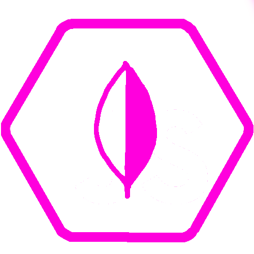
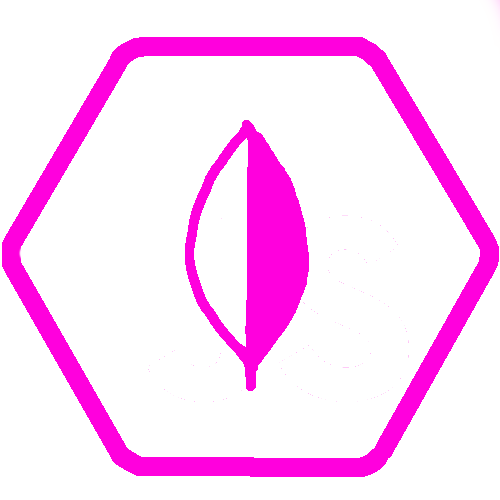

01.Sobre mí
Hola! Mi nombre es Gonzalo Rando Serna y me dedico a la informática y al desarrollo. Mi interés por este oficio apareció desde que yo era muy pequeño, con 15 años aprendí a programar Scripts y hice mis primeras páginas con HTML y CSS. Empecé a estudiar para trabajar como administrador de sistemas y redes, pero cuando descubrí el mundo del desarrollo me enamoró por completo.
A día de hoy tengo la suerte de dedicarme al oficio de mis sueños, donde nunca me canso de estudiar o aprender cosas nuevas. Estoy enfocado en convertirme en desarrollador full stack y aprendiendo tecnologías tanto de backend como de fronted.


 
